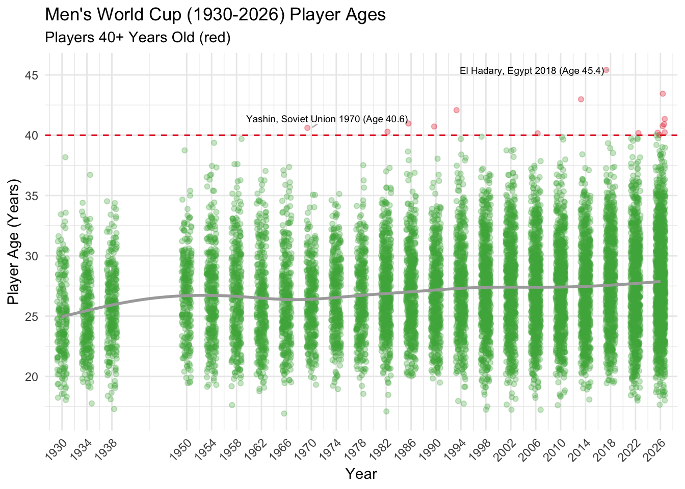
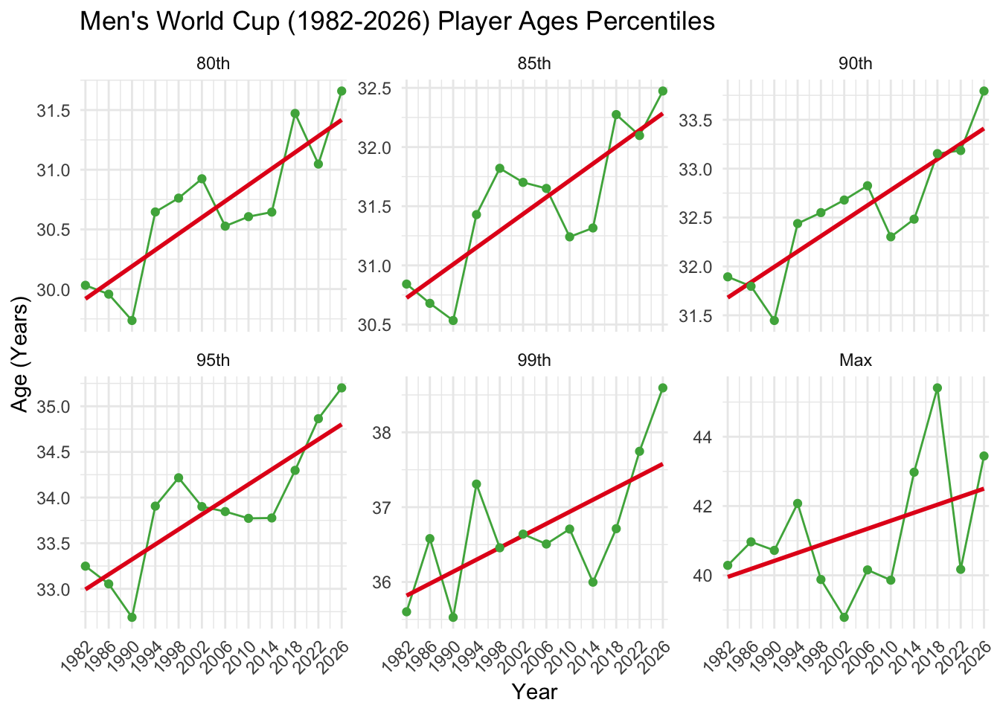
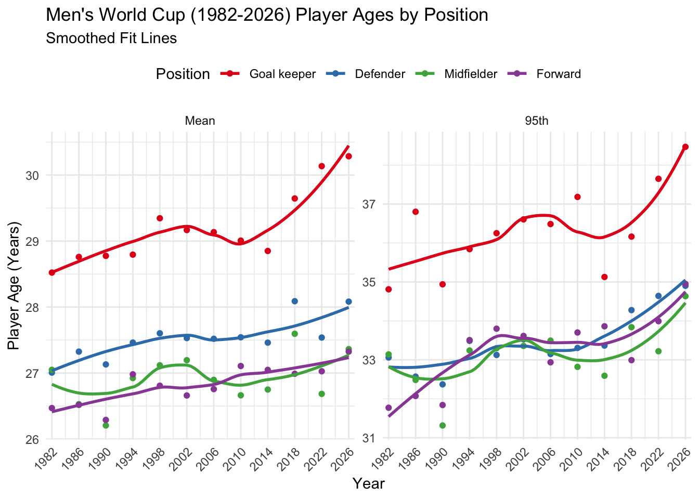

The 2026 Men’s World Cup will be the first time any player has made it to six World Cup squads - and three veterans will accomplish this feat. The tournament will also feature more players over age 40 than all prior World Cups combined.
Are we witnessing increases in athletic longevity? Or is it just a bias in attention to a few stars that happen to be closing their careers at the same tournament?
We’ll narrow this down to answerable questions about the ages of players selected to represent their country’s team (the “squad”) at men’s World Cups: Are men’s World Cup squads getting older, is there an increase in longevity?
This was just a fun mini-project. I am actually an NFL-football fan (Bear Down!), and just an every-4-years-bandwagon-World Cup fan - so please let me know if you think there’s any soccer/football knowledge I am missing!
1930-2026: Are men’s World Cup squads getting older?
As noted, there were seven men 40+ at the start of the 2026 tournament - compared to just nine total in all prior years.
| 2026 World Cup Players Over 40 Years Old | |||
| Name | Team | Position | Age |
|---|---|---|---|
| Craig Gordon | Scotland | Goal keeper | 43.4 |
| Cristiano Ronaldo | Portugal | Forward | 41.3 |
| Guillermo Ochoa | Mexico | Goal keeper | 40.9 |
| Luka Modrić | Croatia | Midfielder | 40.8 |
| Edin Džeko | Bosnia and Herzegovina | Forward | 40.2 |
| Manuel Neuer | Germany | Goal keeper | 40.2 |
| Vozinha | Cape Verde | Goal keeper | 40.0 |
Although there is great variability in individual player ages, the trend line is going up.

With so many players, it can be easier to visualize this increase in age over time by focusing on the average squad age.1

Notably, three out of the five squad with an average age over 30 are in the current 2026 World Cup - including the top two oldest of all time.
| World Cup Squads Average Age Over 30 Years Old | ||
| Year | Team | Mean Age |
|---|---|---|
| 2026 | Panama | 30.4 |
| 2026 | Iran | 30.3 |
| 1998 | Germany | 30.2 |
| 2026 | Colombia | 30.1 |
| 1954 | South Korea | 30.1 |
Expansion Era (1982-2026): Are men’s World Cup squads getting older?
I will primarily focus the rest of my analyses on the World Cups since 1982, when the World Cup expanded to 24 teams and 526 players. Since then the number of teams has increased twice more, and the squad size has increased twice as well, leading to 1248 players in the 2026 tournament.2 A priori / before looking at the data, I had decided to avoid analyses on male ages in the decades after the end of World War II, and this expansion era began 37 years later and thus serves as a reasonable starting point.3
Using a regression fit line during the expansion era, we can see that at every tournament predicted mean player age was increasing by .07 years or 25 days.4

Because I’m primarily interested in older players, I wouldn’t want the mean ages to be increasing just because younger players are being left off squads. To rule this out, I examined the trends in selecting younger players to squads. By focusing on the minimum age at each tournament (which does jump around a bit as it focuses on a single extreme individual) but also a number of lower percentiles, we can see that there is not any general increase in the younger end of players and might be a slight tendency to giving youth more of a chance. So changes in the mean are not being driven by the selection of fewer younger players.

| Younger Age Percentiles, 1982 vs 2026 | ||||||
| Year | Min | 01st | 05th | 10th | 15th | 20th |
|---|---|---|---|---|---|---|
| 1982 | 17.1 | 20.1 | 21.7 | 23.0 | 23.5 | 24.1 |
| 2026 | 17.7 | 19.2 | 21.4 | 22.7 | 23.5 | 24.2 |
| Change | 0.6 | −1.0 | −0.4 | −0.3 | 0.0 | 0.1 |
But the mean does not focus specifically on the older players I’m interested in. And maximum age focuses on just the single most extreme individual each year (and thus is just quite noisy). So an upper percentile would be more ideal - and examining a number of upper percentiles, we see a consistent pattern of increase among them. Looking over the last 24 years of the expansion era there is between a 1.6 to three year increase.

| Older Age Percentiles, 1982 vs 2026 | ||||||
| Year | 80th | 85th | 90th | 95th | 99th | Max |
|---|---|---|---|---|---|---|
| 1982 | 30.0 | 30.8 | 31.9 | 33.2 | 35.6 | 40.3 |
| 2026 | 31.7 | 32.5 | 33.8 | 35.2 | 38.6 | 43.4 |
| Change | 1.6 | 1.6 | 1.9 | 2.0 | 3.0 | 3.2 |
Both the 95th and 99th percentile (with ages of 35.2 and 38.6, respectively in the 2026 World Cup) seem like reasonable choices to represent longevity. We see that these longevity measures, as well as mean and medians of age, all show a general trend of increasing age over time during the expansion era of the World Cup.

| Age, 1982 vs 2026 | ||||
| Year | Mean | Median | 95th | 99th |
|---|---|---|---|---|
| 1982 | 27.1 | 26.9 | 33.2 | 35.6 |
| 2026 | 27.9 | 27.7 | 35.2 | 38.6 |
| Change | 0.8 | 0.8 | 2.0 | 3.0 |
Is there an trend of increasing age and particularly longevity or older players in World Cup squads? I would argue that yes, we do see evidence of a general trend of overall increasing age (based on the means and medians increasing by .8 of a year or 9.6 months) and a minority but notable number of players with exceptional longevity (based on the 95th percentile increasing by 2 years, the 99th percentile increasing by 3 years).
To dig a bit deeper, is it limited to certain players or squads?
Is it just goal keepers?
It has been noted that many of the oldest players at this and prior World Cups are goalkeepers, as they “typically face less physical wear and tear than outfield players, allowing many to extend their careers well into their late 30s and 40s.” But it also was acknowledged how a surprising number of older veterans on 2026 squads were outfield players.
Looking at the expansion era data, we will focus on the mean and the longevity representation of the 95th percentile. (The 99th percentile is no longer a good option given the smaller sample sizes when splitting by position, particularly for the goal keepers.)5
Goal keepers are overall older than outfielders (defenders, midfielders, and forwards) , their average age is increasing, and there seem to increases in longevity as represented by their 95th percentile of age increasing. But even outfielders are showing increases in age and increases in longevity.

But how big are these changes? We can calculate the change in the 24 years of data and see that all positions showed noticeable increases on our longevity measure of the 95th percentile, with more than a three year increase for forwards as well as goal keepers across the expansion era.
| Change in Age from 1982 to 2026 by Position | ||
| Position | Mean change (years) | 95th change (years) |
|---|---|---|
| Goal keeper | 1.8 | 3.7 |
| Defender | 1.1 | 1.8 |
| Midfielder | 0.3 | 1.5 |
| Forward | 0.8 | 3.2 |
Is it just different squad creation by the expanding field of teams?
As the World Cup as expanded, it seemed natural to wonder if the new teams being able to play may differ in the age of players they select for their squads.6
In follow up analyses, I did not find any clear relationships between a team’s number of appearances at the World Cup and the mean or 95th percentile of age of squad (the 2026 debut teams being a bit older was a bit of an anomaly, as debut teams were a bit younger than others in most prior years).
FIFA rankings at the beginning of the tournament (with worse rankings perhaps most representing the teams benefiting from the expansion) also did not show much of a clear relationship with age.
Similarly, while a few noteworthy small countries who have qualified in recent years had a bit older squads on average - with Cabo Verde’s team and their 40 year old goalie drawing particular attention - when excluding outliers (populations below 1 million or China’s one 2002 appearance at the upper end) there wasn’t any real relationship between a country’s population and the average age of their squad. There were slight hints of smaller countries favoring longevity - the 95th percentile of a squad’s age had a negative relationship with population. However, it is a bit inconsistent in it’s direction and may be primarily driven by the next few smallest countries, so perhaps it is not be worth interpreting.

Increasing athletic longevity has captured attention in other sports as well, with notable recent examples of Lebron James in the NBA and Tom Brady in the NFL.
Comments?
Post Notes
Data Details
There is an excellent World Cup database (© 2026 Joshua C. Fjelstudl, Ph.D. published under CC-BY-SA 4.0 license) of the 1930-2022 World Cups, with tables of players, squads, and team performances.7 Player and squad information for 2026 was scrapped from Wikipedia.
Age is calculated from the date of the start of the tournament, and I am including anyone named to a squad, regardless of whether they saw playing time during the tournament.8
Footnotes
As nearly all teams use their full squad size allowed, the trend of individual players or squad averages over time should be nearly identical, it simply reduces the amount and variability of data points shown to help visualize the trend.↩︎
Specifically, the World Cup moved from 16 to 24 teams in 1982, further increased to 32 teams in 1998, and 48 teams in 2026. There were also increases in squad size, that is the number of players per team, from 22 to 23 in 2002, and to 26 in 2022.↩︎
The World Cup was suspended during WWII, and it seemed reasonable to suspect that in the countries involved in the war it may have suppressed the number of older players that otherwise may have been seen in the decades following: There would have been greater injury and mortality among military-aged men during the war that would have left fewer able-bodied men in their 20’s-40’s for the next couple decades when World Cup tournaments resumed. It may also be reasonable to suspect other influences, such as those generations being able to devote less time and energy to sports during their developmental years compared to younger generation coming after the war. I was initially planning to use data starting at some point in the mid-70’s, but when I realized there was a new “Expansion Era” starting in 1982, that seemed like a reasonable conceptual cut point.↩︎
Coefficient .0174 per year * 4 years for each tournament = .07 years increase in age per tournament .0174 per year * 4 years for each tournament * 365.25 days per year = 25.36 days increase per tournament↩︎
Specifically, goal keepers never made up more than 100 players per year before 2026, and all other position groups were below 200 before 1998. Thus, the downsides of using a maximum and focusing on an extreme individual or two would apply in this case to the 99th percentile.↩︎
More details on these analyses can be found on the project github repo.↩︎
At the time of downloading, 2026 data was not yet included↩︎
Note that a few seeming inconsistencies can arise based on these definitions: The earlier noted FIFA article about players over 40 include Uruguay’s Fernando Muslera who turned 40 after the start of the 2026 tournament but before his team’s first game; his age in my data would be 39.98631. They also only referred to players in prior tournaments who earned a cap - that is, played actual time - which would exclude, for example, unused squad members like the first 40+ year old Lev Yashin named to 1970 Soviet Union squad.↩︎
Citation
@online{rankin2026,
author = {Lindsay Rankin},
title = {Are {World} {Cup} {Squads} {Getting} {Older?}},
date = {2026-07-09},
url = {https://lindsayrankin.github.io/projects/2026-07-01-m-world-cup-age},
langid = {en}
}